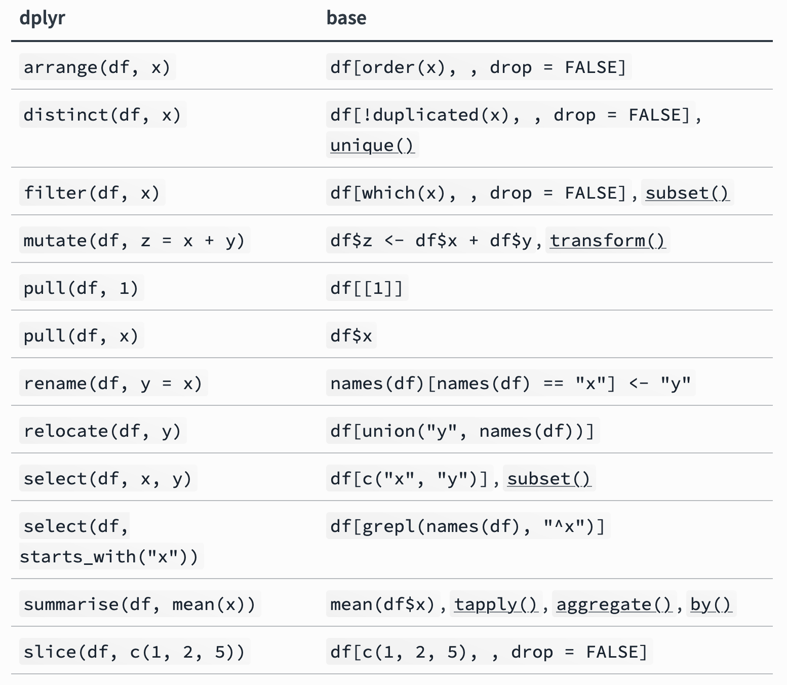

Data Manipulation with dplyr
ID 529: Data Management and Analytic Workflows in R
Dean Marengi | Wednesday, January 11th, 2023
Motivation
- We’ve now learned a bit about:
- Fundamentals of R programming using base R syntax
- Importing data into R
- Visualizing data using
ggplot
- Data are rarely free of issues when they are first collected or received
- We need efficient tools to process and clean them!
- Base R is very powerful for data manipulation, but can be difficult to write and read
- Complex code that’s time-consuming to write can threaten reproducibility
dplyrand other R packages emphasize writing clean, readable code
- We can leverage these R packages to:
- Write efficient code to perform most data manipulation tasks
- Chain together data manipulation operations in a concise sequence
Learning objectives
- Understand the basic principles of dplyr
- Core functions for data manipulation
- Learn how to implement
dplyrfunctions to prepare data for analysis- Identifying data quality issues
- Restructuring and organizing data
- Deriving new variables
- Learn about other functions that help core
dplyrfunctions perform specific tasks- Transforming multiple columns at once
- Selecting multiple columns at once
- Using conditional logic to create new columns
What is data manipulation?
- The common tasks
- Cleaning and renaming variables
- Selecting a subset of columns to work with from a larger dataset
- Creating new variables (e.g., based on conditionals or calculations involving other columns)
- Filtering data for a subset of rows (e.g., based on a specific group)
- Summarizing data
dplyr:: a grammar of data manipulation
dplyr overview

- Part of the core
tidyversepackage ecosystem - Functions for performing common data manipulation tasks
- Fast and efficient with concise syntax
- Chain together data cleaning steps
- Improves code readability
- Core single table functions (verbs):
rename(): Modify variable namesselect(): Pick variables by namemutate(): Create new or modify existing variablesfilter(): Subset observations using conditionalsarrange(): Reorder observations based on datasummarize(): Reduce rows into a summary value
dplyr syntax overview
- First argument in all
dplyrfunctions is always a data frame or tibble - Variables referenced by name and without quotes (not
df$variable) dplyrfunctions always return a new data frame or tibble
- Uses the
%>%(“pipe”) operator- Imported from
magrittrpackage - Can “pipe” function output from one data manipulation step to the next
- Produces clean, readable code that reads from left to right, top to bottom
- Note: The
%>%reads as “then”
- Imported from
Example
# A tibble: 15 × 3
id group num_gold_stars
<int> <chr> <int>
1 2 i <3 dplyr 107
2 10 dplyr rocks 107
3 7 dplyr rocks 95
4 11 i <3 dplyr 100
5 5 i <3 dplyr 91
6 12 clean code or bust 110
7 15 clean code or bust 107
8 8 i <3 dplyr 106
9 3 clean code or bust 98
10 9 clean code or bust 102
# … with 5 more rows# A tibble: 5 × 3
id group num_gold_stars
<int> <chr> <int>
1 2 i <3 dplyr 107
2 8 i <3 dplyr 106
3 11 i <3 dplyr 100
4 14 i <3 dplyr 98
5 5 i <3 dplyr 91dplyr vs base R syntax

Example dataset
Overview
NHANESdataset available on the ID 529 GitHub- The dataset includes individual-level:
- Demographic and clinical characteristics
- Socioeconomic parameters
- Blood measures of PFAS/PFOA
- Dietary intake parameters
- For our examples, we will include a subset of these variables
id,age,race_ethnicitymean_BP,height,weightpfos,pfoa,pfna,pfhs,pfde
Rows: 2,339
Columns: 12
$ id <chr> "73568", "73571", "73574"…
$ age <int> 26, 76, 33, 16, 32, 18, 1…
$ race_ethnicity <fct> Non-Hispanic White, Non-H…
$ mean_BP <dbl> 104.6667, 126.0000, 121.3…
$ height <dbl> 152.5, 172.5, 158.0, 170.…
$ weight <dbl> 47.1, 102.4, 56.8, 67.3, …
$ poverty_ratio <dbl> 5.00, 5.00, 2.10, 1.58, 0…
$ PFOS <dbl> 2.2, 10.2, NA, 4.7, 3.0, …
$ PFOA <dbl> 3.00, 4.77, NA, 2.37, 1.4…
$ PFNA <dbl> 0.5, 1.3, 0.7, 0.6, 0.4, …
$ PFHS <dbl> 3.0, 2.0, 0.2, 7.6, 1.2, …
$ PFDE <dbl> 0.2, 0.3, 0.1, 0.2, 0.1, …dplyr::rename()
Function(s)
Main arguments
.data= a data framerename()...= variables to replace- format:
new_name=old_name
- format:
rename_with().fn= function to apply over multiple selected columns.cols= the columns to rename
Description
- Rename individual variables, or multiple variables by applying a function
Examples
# Explicitly rename variables in the dataset
rename(data,
sbp = mean_BP,
pov_ratio = poverty_ratio,
race_eth = race_ethnicity,
) %>%
glimpse()Rows: 2,339
Columns: 12
$ id <chr> "73568", "73571", "73574", "73…
$ age <int> 26, 76, 33, 16, 32, 18, 13, 14…
$ race_eth <fct> Non-Hispanic White, Non-Hispan…
$ sbp <dbl> 104.6667, 126.0000, 121.3333, …
$ height <dbl> 152.5, 172.5, 158.0, 170.4, 16…
$ weight <dbl> 47.1, 102.4, 56.8, 67.3, 79.7,…
$ pov_ratio <dbl> 5.00, 5.00, 2.10, 1.58, 0.29, …
$ PFOS <dbl> 2.2, 10.2, NA, 4.7, 3.0, NA, 7…
$ PFOA <dbl> 3.00, 4.77, NA, 2.37, 1.47, NA…
$ PFNA <dbl> 0.5, 1.3, 0.7, 0.6, 0.4, NA, 0…
$ PFHS <dbl> 3.0, 2.0, 0.2, 7.6, 1.2, NA, 0…
$ PFDE <dbl> 0.2, 0.3, 0.1, 0.2, 0.1, NA, 0…dplyr::rename() cont.
Rows: 2,339
Columns: 12
$ id <chr> "73568", "73571", "73574", "73576", "73577", "73578", "73584", "73587", "73…
$ age <int> 26, 76, 33, 16, 32, 18, 13, 14, 50, 20, 13, 37, 69, 16, 43, 36, 31, 80, 56,…
$ race_ethnicity <fct> Non-Hispanic White, Non-Hispanic White, NA, Non-Hispanic Black, Hispanic, H…
$ mean_bp <dbl> 104.6667, 126.0000, 121.3333, 109.3333, 119.3333, 122.6667, 109.3333, 112.0…
$ height <dbl> 152.50, 172.50, 158.00, 170.40, 166.20, 175.20, 144.90, 168.80, 180.50, 165…
$ weight <dbl> 47.1, 102.4, 56.8, 67.3, 79.7, 109.4, 53.1, 110.2, 104.4, 86.7, 44.9, 126.2…
$ poverty_ratio <dbl> 5.00, 5.00, 2.10, 1.58, 0.29, 0.58, 3.07, 3.33, 2.18, NA, 1.52, 0.63, 2.44,…
$ pfos <dbl> 2.2, 10.2, NA, 4.7, 3.0, NA, 7.0, 35.5, NA, 4.7, 4.5, 6.3, 2.5, NA, NA, 2.0…
$ pfoa <dbl> 3.00, 4.77, NA, 2.37, 1.47, NA, 2.37, 6.17, NA, 1.80, 1.87, 1.67, 2.87, NA,…
$ pfna <dbl> 0.5, 1.3, 0.7, 0.6, 0.4, NA, 0.8, 3.3, NA, 0.5, 1.7, 0.5, 1.0, NA, 0.7, 0.3…
$ pfhs <dbl> 3.0, 2.0, 0.2, 7.6, 1.2, NA, 0.8, 6.3, NA, 1.6, 0.8, 1.6, 2.1, NA, 3.6, 0.6…
$ pfde <dbl> 0.20, 0.30, 0.10, 0.20, 0.10, NA, 0.20, 1.70, NA, 0.20, 0.20, 0.20, 0.30, N…# Convert column names that start with PF to upper case
rename_with(data, .fn = toupper, starts_with("pf")) %>%
glimpse()Rows: 2,339
Columns: 12
$ id <chr> "73568", "73571", "73574", "73576", "73577", "73578", "73584", "73587", "73…
$ age <int> 26, 76, 33, 16, 32, 18, 13, 14, 50, 20, 13, 37, 69, 16, 43, 36, 31, 80, 56,…
$ race_ethnicity <fct> Non-Hispanic White, Non-Hispanic White, NA, Non-Hispanic Black, Hispanic, H…
$ mean_BP <dbl> 104.6667, 126.0000, 121.3333, 109.3333, 119.3333, 122.6667, 109.3333, 112.0…
$ height <dbl> 152.50, 172.50, 158.00, 170.40, 166.20, 175.20, 144.90, 168.80, 180.50, 165…
$ weight <dbl> 47.1, 102.4, 56.8, 67.3, 79.7, 109.4, 53.1, 110.2, 104.4, 86.7, 44.9, 126.2…
$ poverty_ratio <dbl> 5.00, 5.00, 2.10, 1.58, 0.29, 0.58, 3.07, 3.33, 2.18, NA, 1.52, 0.63, 2.44,…
$ PFOS <dbl> 2.2, 10.2, NA, 4.7, 3.0, NA, 7.0, 35.5, NA, 4.7, 4.5, 6.3, 2.5, NA, NA, 2.0…
$ PFOA <dbl> 3.00, 4.77, NA, 2.37, 1.47, NA, 2.37, 6.17, NA, 1.80, 1.87, 1.67, 2.87, NA,…
$ PFNA <dbl> 0.5, 1.3, 0.7, 0.6, 0.4, NA, 0.8, 3.3, NA, 0.5, 1.7, 0.5, 1.0, NA, 0.7, 0.3…
$ PFHS <dbl> 3.0, 2.0, 0.2, 7.6, 1.2, NA, 0.8, 6.3, NA, 1.6, 0.8, 1.6, 2.1, NA, 3.6, 0.6…
$ PFDE <dbl> 0.20, 0.30, 0.10, 0.20, 0.10, NA, 0.20, 1.70, NA, 0.20, 0.20, 0.20, 0.30, N…dplyr::filter()
Function(s)
Main arguments
.data= a data frame...= Expressions for filtering the data frame, which evaluate toTRUEorFALSE
Description
- Subsets observations based on their values
- Expressions use operators
- Comparison: >, >=, <, <=, !=, ==
- Logical: !, &, |, xor
- Binary: %in%
- Returns a data frame with a subset of rows where conditions evaluated to
TRUE
Examples
dplyr::filter()
# Subset data for observations where poverty
# ratio IS missing (NA)
filter(data, is.na(poverty_ratio))# A tibble: 203 × 12
id age race_ethnicity mean_BP height weight poverty_ratio PFOS PFOA PFNA PFHS PFDE
<chr> <int> <fct> <dbl> <dbl> <dbl> <dbl> <dbl> <dbl> <dbl> <dbl> <dbl>
1 73598 20 Hispanic 112 165 86.7 NA 4.7 1.8 0.5 1.6 0.2
2 73699 20 Non-Hispanic White 98 184. 77 NA 5.6 4.6 0.5 4.4 0.1
3 73703 38 Hispanic 99.3 156. 63.7 NA 5 0.97 0.5 1.6 0.2
4 73724 26 Non-Hispanic Black 117. 184. 65.1 NA 14.8 2.9 0.8 2.1 0.1
5 73733 23 Hispanic 112 154 75.8 NA 2.9 1.27 0.4 1.1 0.1
6 73756 56 Non-Hispanic White 119. 171. 75 NA 4.6 3.2 0.5 0.9 0.2
7 73774 80 Non-Hispanic Black NaN 159. 58.9 NA 6.5 1.97 0.8 2.7 0.3
8 73872 63 <NA> 118 158. 70.3 NA 11.7 1.87 1.5 1 3.3
9 73914 52 <NA> 111. 160. 63.6 NA 1.4 1.07 0.4 0.6 0.07
10 73935 63 Hispanic 130 174. 73.6 NA 5.2 2.6 0.9 2.6 0.2
# … with 193 more rowsdplyr::arrange()
Function(s)
Main arguments
.data= a data frame...= Variables or expressions to order rows by.by_group= Sort by first grouping variable (grouped data frames, only)
Description
- Orders data frame rows by values in specified columns
- Can order by more than one column
- Defaults to ordering from lowest-to-highest
desc()= descending order
- Missing values are sorted last (NAs at bottom)
Examples
# Take the data frame (data)
# Then arrange rows by age (in ascending order)
# Then print the first 5 rows
arrange(data, age) %>%
head(n = 5)# A tibble: 5 × 12
id age race_ethnicity mean_BP height weight
<chr> <int> <fct> <dbl> <dbl> <dbl>
1 74182 12 Hispanic 98.7 148. 37.6
2 74339 12 Hispanic 110 157. 52.7
3 74659 12 Non-Hispanic … 96.7 156. 48.5
4 74753 12 Non-Hispanic … 107. 160 46.6
5 74795 12 Hispanic 98.7 161. 71.2
# … with 6 more variables: poverty_ratio <dbl>,
# PFOS <dbl>, PFOA <dbl>, PFNA <dbl>,
# PFHS <dbl>, PFDE <dbl># Take the data frame (data)
# Then arrange rows by age, then mean SBP (descending)
# Then print the first 5 rows
arrange(data, desc(age), desc(mean_BP)) %>%
head(n = 5)# A tibble: 5 × 12
id age race_ethnicity mean_BP height weight
<chr> <int> <fct> <dbl> <dbl> <dbl>
1 79199 80 Hispanic 196 154. 77.1
2 83662 80 Non-Hispanic … 194 NA 85.2
3 73747 80 Hispanic 193. 161. 78.4
4 77661 80 Non-Hispanic … 186 153. 95.8
5 79095 80 <NA> 186 145. 62.2
# … with 6 more variables: poverty_ratio <dbl>,
# PFOS <dbl>, PFOA <dbl>, PFNA <dbl>,
# PFHS <dbl>, PFDE <dbl>dplyr::select()
Function(s)
Main arguments
.data= a data frame...= Variable name(s) and/or expressions to select columns
Description
- Selects variables in a data frame
- Variable names referenced without quotes
selecthelper functions can select columns using specific operations- E.g., select variables where column names contain the string “bp”
Examples
[1] "id" "age" "race_ethnicity"
[4] "mean_BP" "height" "weight"
[7] "poverty_ratio" "PFOS" "PFOA"
[10] "PFNA" "PFHS" "PFDE" # From the data frame, select sequences of consecutive columns
data %>%
select(id:race_ethnicity, PFOS:PFDE) %>%
head(n = 4)# A tibble: 4 × 8
id age race_ethnicity PFOS PFOA PFNA PFHS PFDE
<chr> <int> <fct> <dbl> <dbl> <dbl> <dbl> <dbl>
1 73568 26 Non-Hispanic White 2.2 3 0.5 3 0.2
2 73571 76 Non-Hispanic White 10.2 4.77 1.3 2 0.3
3 73574 33 <NA> NA NA 0.7 0.2 0.1
4 73576 16 Non-Hispanic Black 4.7 2.37 0.6 7.6 0.2dplyr::select() helpers
- Select variables by matching patterns in their names
everything(): Matches all variables.last_col(): Select last variable, possibly with an offset.
- Select variables by matching patterns in their names
starts_with(): Starts with a prefixends_with(): Ends with a suffixcontains(): Contains a literal stringmatches(): Matches a regular expression
- Select variables from a character vector:
all_of(): Matches variable names in a character vector. All names must be present, otherwise an out-of-bounds error is thrown.any_of(): Same as all_of(), except that no error is thrown for names that don’t exist.
- Selects variables with a function
where(): Applies a function to all variables and selects those for which the function returns TRUE.
dplyr::select() helpers
# From the data frame, select id and columns that
# are prefixed with PF
data %>%
select(id, starts_with("PF")) %>%
head(n = 4)# A tibble: 4 × 6
id PFOS PFOA PFNA PFHS PFDE
<chr> <dbl> <dbl> <dbl> <dbl> <dbl>
1 73568 2.2 3 0.5 3 0.2
2 73571 10.2 4.77 1.3 2 0.3
3 73574 NA NA 0.7 0.2 0.1
4 73576 4.7 2.37 0.6 7.6 0.2# Bring ID and PFAS variables to the beginning of the dataset
# then position all non-selected variables after them
data %>%
select(id, starts_with("PF"), everything()) %>%
head(n = 4)# A tibble: 4 × 12
id PFOS PFOA PFNA PFHS PFDE age race_ethnicity mean_BP height weight poverty_ratio
<chr> <dbl> <dbl> <dbl> <dbl> <dbl> <int> <fct> <dbl> <dbl> <dbl> <dbl>
1 73568 2.2 3 0.5 3 0.2 26 Non-Hispanic White 105. 152. 47.1 5
2 73571 10.2 4.77 1.3 2 0.3 76 Non-Hispanic White 126 172. 102. 5
3 73574 NA NA 0.7 0.2 0.1 33 <NA> 121. 158 56.8 2.1
4 73576 4.7 2.37 0.6 7.6 0.2 16 Non-Hispanic Black 109. 170. 67.3 1.58dplyr::mutate()
Function(s)
Main arguments
.data= a data frame...= Name value pairs
Description
- Changes the values of columns and creates new columns.
- i.e., adds new variables
- i.e., adds new variables
- Will overwrite variables that share the same name
Examples
# Derive new variables
data %>%
mutate(weight_lbs = round(weight * 2.20462, 2),
height_in = round(height * 0.393701, 2),
age_60 = if_else(age >= 60, 1, 0)
) %>%
select(id, age, age_60, height, height_in, weight, weight_lbs)# A tibble: 2,339 × 7
id age age_60 height height_in weight weight_lbs
<chr> <int> <dbl> <dbl> <dbl> <dbl> <dbl>
1 73568 26 0 152. 60.0 47.1 104.
2 73571 76 1 172. 67.9 102. 226.
3 73574 33 0 158 62.2 56.8 125.
4 73576 16 0 170. 67.1 67.3 148.
5 73577 32 0 166. 65.4 79.7 176.
6 73578 18 0 175. 69.0 109. 241.
7 73584 13 0 145. 57.0 53.1 117.
8 73587 14 0 169. 66.5 110. 243.
9 73597 50 0 180. 71.1 104. 230.
10 73598 20 0 165 65.0 86.7 191.
# … with 2,329 more rowsdplyr::summarize()
Function(s)
Main arguments
.data= a data frame...= Name value pairs of the summary function(s) to apply
Description
- Creates a new data frame based on one or more summary functons
- Data frame has >1 rows if the data are grouped
- Has single row if there are no groups supplied
Examples
# Compute summary statistics for age by race/ethnicity
data %>%
filter(!is.na(race_ethnicity)) %>%
group_by(race_ethnicity) %>%
summarize(age_mean = mean(age, na.rm = T),
age_sd = sd(age, na.rm = T),
age_min = min(age, na.rm = T),
age_max = max(age, na.rm = T))# A tibble: 3 × 5
race_ethnicity age_m…¹ age_sd age_min age_max
<fct> <dbl> <dbl> <int> <int>
1 Non-Hispanic Whi… 47.1 21.4 12 80
2 Non-Hispanic Bla… 41.2 21.0 12 80
3 Hispanic 39.7 20.4 12 80
# … with abbreviated variable name ¹age_meanExample
Original nhanes_ID529 dataset
[1] "id | race_ethnicity | sex_gender | age | poverty_ratio | days_dental_floss | PFAS_total | PFOS | PFOA | PFNA | PFHS | PFDE | total_energy | fast_food_energy_no_popcorn_no_seafood | restaurant_energy_no_popcorn_no_seafood | non_fast_food_or_restaurant_energy_no_popcorn_no_seafood | popcorn_energy | shellfish_energy | fish_energy | mean_BP | weight | height" id race_ethnicity sex_gender age poverty_ratio days_dental_floss PFAS_total PFOS PFOA PFNA PFHS PFDE total_energy
1 73568 Non-Hispanic White Female 26 5.00 NA 8.90 2.2 3.00 0.5 3.0 0.20 3145
2 73571 Non-Hispanic White Male 76 5.00 2 18.57 10.2 4.77 1.3 2.0 0.30 1076
3 73574 <NA> Female 33 2.10 7 NA NA NA 0.7 0.2 0.10 5621
4 73576 Non-Hispanic Black Male 16 1.58 NA 15.47 4.7 2.37 0.6 7.6 0.20 1012
5 73577 Hispanic Male 32 0.29 0 6.17 3.0 1.47 0.4 1.2 0.10 3194
6 73578 Hispanic Male 18 0.58 NA NA NA NA NA NA NA 955
7 73584 Non-Hispanic White Male 13 3.07 NA 11.17 7.0 2.37 0.8 0.8 0.20 663
8 73587 <NA> Male 14 3.33 NA 52.97 35.5 6.17 3.3 6.3 1.70 875
9 73597 Non-Hispanic Black Female 50 2.18 0 NA NA NA NA NA NA 1239
10 73598 Hispanic Male 20 NA NA 8.80 4.7 1.80 0.5 1.6 0.20 4865
11 73599 Non-Hispanic White Female 13 1.52 NA 9.07 4.5 1.87 1.7 0.8 0.20 1540
12 73600 Non-Hispanic Black Male 37 0.63 0 10.27 6.3 1.67 0.5 1.6 0.20 2857
13 73604 Non-Hispanic White Female 69 2.44 7 8.77 2.5 2.87 1.0 2.1 0.30 1301
14 73606 Non-Hispanic White Male 16 3.23 NA NA NA NA NA NA NA 1692
15 73610 Non-Hispanic White Male 43 2.03 3 NA NA NA 0.7 3.6 0.20 1783
16 73619 Hispanic Female 36 0.84 0 3.97 2.0 0.97 0.3 0.6 0.10 1331
17 73624 Non-Hispanic White Female 31 0.47 0 3.34 1.9 0.67 0.2 0.5 0.07 1723
18 73628 Non-Hispanic White Male 80 3.00 7 22.60 12.4 5.50 1.1 3.3 0.30 1972
19 73631 Non-Hispanic Black Female 56 0.71 0 4.57 2.1 1.17 0.6 0.5 0.20 2117
20 73633 Non-Hispanic White Female 43 3.56 0 21.77 9.0 7.97 2.8 1.4 0.60 1391
21 73639 Non-Hispanic White Male 71 1.45 0 25.27 13.3 6.37 1.5 3.6 0.50 1298
22 73642 Non-Hispanic White Female 57 2.27 0 9.07 5.4 1.97 0.9 0.5 0.30 769
23 73647 Hispanic Female 61 3.53 0 3.64 1.4 1.17 0.2 0.8 0.07 739
24 73655 Non-Hispanic Black Male 44 1.79 4 8.57 5.7 0.97 0.8 1.0 0.10 5012
25 73663 Non-Hispanic White Male 25 5.00 NA 12.80 7.1 3.10 0.9 1.5 0.20 1880
26 73671 Non-Hispanic Black Male 49 0.86 0 22.17 15.1 1.97 1.7 2.9 0.50 3220
27 73677 Non-Hispanic Black Female 61 5.00 6 32.40 21.6 5.30 2.0 3.0 0.50 1257
28 73678 Non-Hispanic White Male 51 1.02 7 14.07 8.0 2.37 0.5 3.1 0.10 2863
29 73684 <NA> Male 64 5.00 2 13.17 6.3 3.27 1.1 2.2 0.30 1397
30 73688 Non-Hispanic White Male 58 4.45 7 18.07 12.4 2.07 0.7 2.8 0.10 1636
31 73693 Non-Hispanic White Female 78 0.78 7 6.57 3.6 1.70 0.3 0.9 0.07 1562
32 73694 Non-Hispanic White Female 66 4.51 2 6.87 3.6 0.87 0.4 1.9 0.10 1129
33 73699 Non-Hispanic White Male 20 NA NA 15.20 5.6 4.60 0.5 4.4 0.10 NA
34 73702 Non-Hispanic White Female 48 3.81 0 2.54 0.9 0.97 0.3 0.3 0.07 2125
35 73703 Hispanic Female 38 NA 7 8.27 5.0 0.97 0.5 1.6 0.20 2027
36 73708 Hispanic Male 69 5.00 7 8.64 5.8 1.17 0.6 1.0 0.07 2317
37 73714 Non-Hispanic White Female 29 5.00 NA 6.57 1.9 2.77 0.6 1.0 0.30 3880
38 73715 Non-Hispanic White Female 38 3.07 3 8.47 4.2 2.37 0.9 0.7 0.30 1390
39 73717 Non-Hispanic Black Male 78 1.89 2 46.07 33.4 5.77 2.5 3.8 0.60 2294
40 73718 Non-Hispanic Black Male 53 1.02 7 12.87 7.6 1.27 0.8 3.0 0.20 1304
41 73723 Non-Hispanic White Male 77 5.00 0 34.20 22.4 6.40 1.0 4.1 0.30 1084
42 73724 Non-Hispanic Black Male 26 NA NA 20.70 14.8 2.90 0.8 2.1 0.10 1262
43 73732 Non-Hispanic White Male 80 3.18 0 4.07 2.6 0.77 0.3 0.2 0.20 2020
44 73733 Hispanic Female 23 NA NA 5.77 2.9 1.27 0.4 1.1 0.10 1339
45 73740 <NA> Female 57 2.52 7 22.37 15.4 2.67 1.6 1.3 1.40 1878
46 73747 Hispanic Female 80 5.00 0 29.47 20.7 2.47 1.3 4.6 0.40 392
47 73756 Non-Hispanic White Male 56 NA 5 9.40 4.6 3.20 0.5 0.9 0.20 1839
48 73760 Non-Hispanic White Male 64 1.27 0 17.87 12.6 2.67 0.9 1.4 0.30 1926
49 73766 Non-Hispanic White Female 75 1.75 6 11.90 6.4 2.70 0.7 1.9 0.20 1760
50 73774 Non-Hispanic Black Female 80 NA 0 12.27 6.5 1.97 0.8 2.7 0.30 1298
51 73778 Hispanic Male 62 2.08 7 12.54 5.6 2.57 0.6 3.7 0.07 3730
52 73782 Non-Hispanic White Male 68 1.08 4 15.00 6.8 3.30 1.2 3.6 0.10 1524
53 73787 Non-Hispanic Black Male 71 3.07 0 22.37 16.3 3.17 0.8 1.8 0.30 616
54 73800 Non-Hispanic White Female 54 1.29 0 12.44 9.3 1.57 0.6 0.9 0.07 883
55 73806 Non-Hispanic Black Male 63 5.00 3 42.07 32.9 1.57 3.1 3.2 1.30 1141
56 73809 Non-Hispanic White Female 52 1.33 3 2.67 1.2 0.70 0.3 0.4 0.07 1324
57 73810 Hispanic Male 48 2.25 1 8.37 3.2 2.47 0.4 2.2 0.10 3200
58 73822 Non-Hispanic Black Female 13 0.03 NA NA NA NA NA NA NA NA
59 73826 Hispanic Female 14 0.54 NA 6.07 2.2 1.37 1.7 0.7 0.10 1788
60 73833 <NA> Female 34 5.00 3 NA NA NA NA NA NA 1898
61 73835 Hispanic Male 13 5.00 NA 8.10 3.5 2.70 0.7 1.0 0.20 2253
62 73841 Hispanic Male 13 0.58 NA 4.47 1.2 1.97 0.7 0.5 0.10 1244
63 73845 Non-Hispanic White Female 70 1.65 7 NA NA NA 0.4 3.8 0.07 1420
64 73846 Non-Hispanic Black Female 24 1.43 NA 5.57 2.8 1.17 0.7 0.8 0.10 1338
65 73847 Non-Hispanic White Male 34 1.13 0 NA NA NA 0.5 1.7 0.20 2100
66 73849 Non-Hispanic White Female 16 5.00 NA 7.24 4.1 1.07 0.2 1.8 0.07 2617
67 73855 Non-Hispanic White Female 38 0.28 0 8.17 4.3 1.67 1.0 1.0 0.20 2832
68 73862 Non-Hispanic White Female 61 1.28 0 12.17 4.8 3.47 1.0 2.6 0.30 973
69 73864 Non-Hispanic White Female 62 1.21 4 9.87 6.3 1.87 0.8 0.7 0.20 1287
70 73866 Hispanic Female 47 4.67 3 2.64 0.8 1.17 0.2 0.4 0.07 2067
71 73872 <NA> Female 63 NA 2 19.37 11.7 1.87 1.5 1.0 3.30 NA
72 73873 <NA> Male 80 2.26 0 11.57 7.2 2.47 0.7 1.0 0.20 1934
73 73875 Hispanic Male 43 1.65 7 8.37 6.3 0.87 0.5 0.5 0.20 4688
74 73879 Non-Hispanic White Female 58 2.03 0 11.57 6.1 2.47 0.7 2.2 0.10 2674
75 73881 Hispanic Male 38 0.86 2 14.80 6.7 3.30 0.6 4.0 0.20 2832
76 73882 Non-Hispanic White Female 25 0.21 NA 10.70 5.4 2.80 0.9 1.3 0.30 2392
77 73884 Hispanic Male 43 3.82 2 11.47 6.0 1.87 0.9 2.6 0.10 2020
78 73886 Hispanic Female 64 5.00 7 15.07 7.5 4.67 0.8 1.9 0.20 1041
79 73887 Non-Hispanic White Male 16 2.20 NA 19.20 8.1 6.80 1.9 1.6 0.80 1830
80 73888 Non-Hispanic White Male 56 5.00 1 17.67 10.4 3.27 0.7 3.2 0.10 1173
81 73890 Non-Hispanic Black Male 16 0.30 NA 6.94 2.2 1.37 0.5 2.8 0.07 2353
82 73892 <NA> Male 15 5.00 NA 5.17 2.3 1.77 0.6 0.4 0.10 1765
83 73899 Non-Hispanic Black Male 57 5.00 7 22.77 11.4 1.57 0.8 8.8 0.20 5117
84 73904 Hispanic Male 17 0.54 NA 11.07 7.2 1.87 0.5 1.3 0.20 1636
85 73906 Hispanic Female 34 0.44 2 2.24 1.3 0.47 0.2 0.2 0.07 2543
86 73908 Non-Hispanic White Male 67 3.22 0 31.07 19.8 4.57 2.2 3.8 0.70 1193
87 73914 <NA> Female 52 NA 3 3.54 1.4 1.07 0.4 0.6 0.07 2676
88 73915 Non-Hispanic White Female 14 0.87 NA NA NA NA 0.4 0.6 0.07 1468
89 73919 Non-Hispanic Black Male 61 0.00 7 NA NA NA NA NA NA 1936
90 73920 Hispanic Male 18 1.83 NA 6.87 3.7 1.37 0.4 1.2 0.20 2324
91 73925 Hispanic Male 60 0.83 0 8.57 4.6 1.57 0.6 1.6 0.20 2161
92 73926 Hispanic Male 64 3.33 7 NA NA NA 0.6 1.2 0.20 4163
93 73930 Non-Hispanic Black Female 70 5.00 5 12.57 6.7 3.47 0.8 1.3 0.30 2137
94 73931 Hispanic Female 37 0.56 7 5.37 3.5 0.97 0.4 0.4 0.10 1712
95 73935 Hispanic Male 63 NA 7 11.50 5.2 2.60 0.9 2.6 0.20 1393
96 73941 Non-Hispanic Black Male 28 2.30 NA 20.40 7.4 3.60 1.0 8.1 0.30 736
97 73943 Hispanic Male 19 1.97 NA 17.67 10.8 3.57 0.8 2.2 0.30 NA
98 73949 Hispanic Male 48 0.73 1 NA NA NA 0.8 2.9 0.40 4138
99 73957 <NA> Female 26 4.04 NA 9.10 4.7 2.50 0.7 0.3 0.90 1317
100 73964 Non-Hispanic Black Male 45 5.00 7 14.97 9.6 3.07 0.7 1.5 0.10 1427
fast_food_energy_no_popcorn_no_seafood restaurant_energy_no_popcorn_no_seafood non_fast_food_or_restaurant_energy_no_popcorn_no_seafood
1 0 0 2948
2 0 0 1076
3 142 2643 2836
4 0 0 1012
5 637 0 2557
6 0 0 955
7 0 0 663
8 0 0 875
9 0 0 1008
10 0 1841 2770
11 1246 0 294
12 0 0 2857
13 20 0 1281
14 0 0 1692
15 0 0 1783
16 0 0 1291
17 0 0 1723
18 0 6 1966
19 0 0 2117
20 0 482 909
21 0 0 1298
22 0 200 569
23 470 0 269
24 1556 1438 2018
25 0 0 1880
26 0 0 3220
27 602 0 655
28 0 0 2863
29 0 551 846
30 0 0 1636
31 0 0 1562
32 0 0 1129
33 NA NA NA
34 923 0 1202
35 0 0 2027
36 0 0 2317
37 1718 1780 382
38 0 0 1390
39 0 0 2294
40 589 0 715
41 0 628 456
42 0 0 1262
43 0 1726 294
44 1201 0 138
45 0 0 1771
46 0 0 392
47 744 0 1095
48 0 0 1926
49 0 895 865
50 0 0 1298
51 134 0 3596
52 0 0 1524
53 0 0 616
54 0 0 412
55 0 432 488
56 948 0 376
57 187 0 3013
58 NA NA NA
59 0 0 1408
60 0 0 1898
61 739 0 1514
62 0 0 1244
63 500 0 920
64 973 0 365
65 0 0 2100
66 559 1512 376
67 1208 0 1624
68 0 0 973
69 0 826 461
70 703 887 477
71 NA NA NA
72 0 0 1686
73 0 762 3926
74 0 0 2674
75 0 1560 1272
76 455 0 1937
77 0 1072 948
78 0 554 487
79 0 0 1830
80 0 533 640
81 1105 0 1248
82 0 0 1765
83 0 3424 1693
84 874 0 762
85 823 0 1720
86 595 0 303
87 317 0 2359
88 440 0 1028
89 0 572 1364
90 437 0 1887
91 182 0 1979
92 0 0 4163
93 0 0 2137
94 0 0 1712
95 321 722 350
96 0 0 736
97 NA NA NA
98 0 348 3432
99 0 445 814
100 74 0 841
popcorn_energy shellfish_energy fish_energy mean_BP weight height
1 197 0 0 104.66667 47.1 152.50
2 0 0 0 126.00000 102.4 172.50
3 0 0 0 121.33333 56.8 158.00
4 0 0 0 109.33333 67.3 170.40
5 0 0 0 119.33333 79.7 166.20
6 0 0 0 122.66667 109.4 175.20
7 0 0 0 109.33333 53.1 144.90
8 0 0 0 112.00000 110.2 168.80
9 0 0 231 NaN 104.4 180.50
10 0 254 0 112.00000 86.7 165.00
11 0 0 0 118.00000 44.9 158.80
12 0 0 0 149.33333 126.2 185.10
13 0 0 0 115.33333 59.5 156.90
14 0 0 0 120.00000 84.2 176.80
15 0 0 0 131.33333 90.2 176.80
16 0 0 40 104.00000 81.7 173.10
17 0 0 0 102.66667 82.9 171.10
18 0 0 0 108.66667 74.0 176.90
19 0 0 0 161.33333 98.8 158.90
20 0 0 0 140.00000 76.8 158.70
21 0 0 0 123.33333 81.5 164.00
22 0 0 0 128.00000 95.5 159.00
23 0 0 0 115.33333 74.2 163.80
24 0 0 0 133.33333 113.1 190.54
25 0 0 0 111.33333 124.8 194.60
26 0 0 0 138.66667 58.2 165.30
27 0 0 0 106.00000 105.2 169.90
28 0 0 0 131.33333 100.1 172.30
29 0 0 0 116.66667 63.9 160.50
30 0 0 0 122.66667 97.1 170.10
31 0 0 0 182.00000 78.8 149.60
32 0 0 0 114.00000 76.0 168.40
33 NA NA NA 98.00000 77.0 184.10
34 0 0 0 156.66667 123.3 163.30
35 0 0 0 99.33333 63.7 156.20
36 0 0 0 114.66667 71.2 165.80
37 0 0 0 102.00000 71.9 164.90
38 0 0 0 104.66667 85.2 157.00
39 0 0 0 166.00000 85.7 162.50
40 0 0 0 134.00000 99.8 194.00
41 0 0 0 129.33333 105.1 177.30
42 0 0 0 116.66667 65.1 184.20
43 0 0 0 158.00000 64.4 169.20
44 0 0 0 112.00000 75.8 154.00
45 0 107 0 115.33333 64.6 154.80
46 0 0 0 193.33333 78.4 161.40
47 0 0 0 118.66667 75.0 171.30
48 0 0 0 124.66667 61.5 169.90
49 0 0 0 135.33333 88.3 156.60
50 0 0 0 NaN 58.9 158.70
51 0 0 0 140.00000 161.8 175.90
52 0 0 0 112.00000 65.2 167.80
53 0 0 0 91.33333 97.9 186.20
54 0 0 471 124.66667 138.5 159.90
55 0 221 0 131.33333 109.2 184.20
56 0 0 0 135.33333 68.3 163.40
57 0 0 0 117.33333 84.9 177.50
58 NA NA NA 105.33333 52.0 168.80
59 0 0 380 94.00000 47.2 154.70
60 0 0 0 93.33333 46.9 159.30
61 0 0 0 117.33333 64.4 165.60
62 0 0 0 105.33333 63.6 167.60
63 0 0 0 130.66667 95.3 156.10
64 0 0 0 110.66667 83.7 155.90
65 0 0 0 132.00000 96.8 180.90
66 0 0 170 104.66667 49.3 158.80
67 0 0 0 NaN 137.1 153.00
68 0 0 0 151.33333 98.2 149.10
69 0 0 0 109.33333 78.7 158.00
70 0 0 0 126.00000 127.3 158.20
71 NA NA NA 118.00000 70.3 158.30
72 248 0 0 138.00000 68.3 161.70
73 0 0 0 122.66667 92.3 180.80
74 0 0 0 146.66667 50.3 161.40
75 0 0 0 119.33333 110.7 174.20
76 0 0 0 114.00000 65.7 157.20
77 0 0 0 116.66667 92.0 173.20
78 0 0 0 130.66667 82.9 163.00
79 0 0 0 122.00000 89.9 170.80
80 0 0 0 137.33333 101.8 175.60
81 0 0 0 118.66667 132.0 177.00
82 0 0 0 98.00000 61.6 169.40
83 0 0 0 125.33333 140.6 182.30
84 0 0 0 120.66667 59.2 168.50
85 0 0 0 106.00000 85.9 172.40
86 0 0 295 108.00000 95.5 178.70
87 0 0 0 110.66667 63.6 160.30
88 0 0 0 86.66667 83.3 168.30
89 0 0 0 151.33333 93.4 173.20
90 0 0 0 126.00000 60.0 168.70
91 0 0 0 107.33333 81.5 168.60
92 0 0 0 139.33333 88.4 169.10
93 0 0 0 136.66667 92.4 164.00
94 0 0 0 119.00000 68.9 146.70
95 0 0 0 130.00000 73.6 174.30
96 0 0 0 117.33333 75.5 170.10
97 NA NA NA 98.00000 55.4 161.50
98 0 194 164 130.66667 94.4 171.70
99 0 4 54 103.33333 59.2 160.60
100 0 0 512 158.00000 89.2 172.80Notice that the standard data frame does not print with information about data types, dataset dimensions, etc. Additionally, constraints of the slide width prevent information about other columns in the data frame from being displayed. Standard data frames run into similar print issues in the R console, which can make them difficult to work with
Example
# Coerce the data frame to a tibble data frame, and assign it to 'data'
data <- as_tibble(nhanes_id529)
# Print the tibble data frame
data# A tibble: 2,339 × 22
id race_et…¹ sex_g…² age pover…³ days_…⁴ PFAS_…⁵ PFOS PFOA PFNA PFHS
<chr> <fct> <fct> <int> <dbl> <int> <dbl> <dbl> <dbl> <dbl> <dbl>
1 73568 Non-Hisp… Female 26 5 NA 8.9 2.2 3 0.5 3
2 73571 Non-Hisp… Male 76 5 2 18.6 10.2 4.77 1.3 2
3 73574 <NA> Female 33 2.1 7 NA NA NA 0.7 0.2
4 73576 Non-Hisp… Male 16 1.58 NA 15.5 4.7 2.37 0.6 7.6
5 73577 Hispanic Male 32 0.29 0 6.17 3 1.47 0.4 1.2
6 73578 Hispanic Male 18 0.58 NA NA NA NA NA NA
7 73584 Non-Hisp… Male 13 3.07 NA 11.2 7 2.37 0.8 0.8
8 73587 <NA> Male 14 3.33 NA 53.0 35.5 6.17 3.3 6.3
9 73597 Non-Hisp… Female 50 2.18 0 NA NA NA NA NA
10 73598 Hispanic Male 20 NA NA 8.8 4.7 1.8 0.5 1.6
# … with 2,329 more rows, 11 more variables: PFDE <dbl>, total_energy <int>,
# fast_food_energy_no_popcorn_no_seafood <int>,
# restaurant_energy_no_popcorn_no_seafood <int>,
# non_fast_food_or_restaurant_energy_no_popcorn_no_seafood <int>,
# popcorn_energy <int>, shellfish_energy <int>, fish_energy <int>,
# mean_BP <dbl>, weight <dbl>, height <dbl>, and abbreviated variable names
# ¹race_ethnicity, ²sex_gender, ³poverty_ratio, ⁴days_dental_floss, …Okay, much better! The tibble data frame provides information about the dataset dimensions, data types, and is also more accommodating of the constrained print width (it still prints details about variables that are not able to be fully displayed).
Example
Let’s use dplyr to organize these data
[1] "id"
[2] "race_ethnicity"
[3] "sex_gender"
[4] "age"
[5] "poverty_ratio"
[6] "days_dental_floss"
[7] "PFAS_total"
[8] "PFOS"
[9] "PFOA"
[10] "PFNA"
[11] "PFHS"
[12] "PFDE"
[13] "total_energy"
[14] "fast_food_energy_no_popcorn_no_seafood"
[15] "restaurant_energy_no_popcorn_no_seafood"
[16] "non_fast_food_or_restaurant_energy_no_popcorn_no_seafood"
[17] "popcorn_energy"
[18] "shellfish_energy"
[19] "fish_energy"
[20] "mean_BP"
[21] "weight"
[22] "height" Clean-up steps
- Change all variable names to lower case
- Explicitly rename a few variables
- Select sequences of columns of interest
pf.*looks for names that begin with ‘pf’ (with no specific text thereafter)
- Move the
pfas_totalcolumn to the end - Output on next slide!
Example
# A tibble: 2,339 × 12
id race_eth mean_sbp weight height pov_ratio pfos pfoa pfna pfhs pfde pfas_total
<chr> <fct> <dbl> <dbl> <dbl> <dbl> <dbl> <dbl> <dbl> <dbl> <dbl> <dbl>
1 73568 Non-Hispanic White 105. 47.1 152. 5 2.2 3 0.5 3 0.2 8.9
2 73571 Non-Hispanic White 126 102. 172. 5 10.2 4.77 1.3 2 0.3 18.6
3 73574 <NA> 121. 56.8 158 2.1 NA NA 0.7 0.2 0.1 NA
4 73576 Non-Hispanic Black 109. 67.3 170. 1.58 4.7 2.37 0.6 7.6 0.2 15.5
5 73577 Hispanic 119. 79.7 166. 0.29 3 1.47 0.4 1.2 0.1 6.17
6 73578 Hispanic 123. 109. 175. 0.58 NA NA NA NA NA NA
7 73584 Non-Hispanic White 109. 53.1 145. 3.07 7 2.37 0.8 0.8 0.2 11.2
8 73587 <NA> 112 110. 169. 3.33 35.5 6.17 3.3 6.3 1.7 53.0
9 73597 Non-Hispanic Black NaN 104. 180. 2.18 NA NA NA NA NA NA
10 73598 Hispanic 112 86.7 165 NA 4.7 1.8 0.5 1.6 0.2 8.8
# … with 2,329 more rowsExample
Derive a variable for hypertension status
- Use
case_when()to apply conditional logic- Derive hypertension categories
data <- data %>%
mutate(htn_cat = factor(
case_when(
mean_sbp < 120 ~ "normal",
mean_sbp >= 120 & mean_sbp < 130 ~ "elevated",
mean_sbp >= 130 & mean_sbp < 140 ~ "stage1",
mean_sbp >= 140 ~ "stage2",
is.na(mean_sbp) ~ NA_character_
)
))
# Print
glimpse(data)Rows: 2,339
Columns: 13
$ id <chr> "73568", "73571", "73574", "7…
$ race_eth <fct> Non-Hispanic White, Non-Hispa…
$ mean_sbp <dbl> 104.6667, 126.0000, 121.3333,…
$ weight <dbl> 47.1, 102.4, 56.8, 67.3, 79.7…
$ height <dbl> 152.5, 172.5, 158.0, 170.4, 1…
$ pov_ratio <dbl> 5.00, 5.00, 2.10, 1.58, 0.29,…
$ pfos <dbl> 2.2, 10.2, NA, 4.7, 3.0, NA, …
$ pfoa <dbl> 3.00, 4.77, NA, 2.37, 1.47, N…
$ pfna <dbl> 0.5, 1.3, 0.7, 0.6, 0.4, NA, …
$ pfhs <dbl> 3.0, 2.0, 0.2, 7.6, 1.2, NA, …
$ pfde <dbl> 0.2, 0.3, 0.1, 0.2, 0.1, NA, …
$ pfas_total <dbl> 8.90, 18.57, NA, 15.47, 6.17,…
$ htn_cat <fct> normal, elevated, elevated, n…Compute summary statistics for PFAS variables
- Some methods implemented in this example will be discussed more next week
data %>%
# Change to a long data format (more on this soon!)
pivot_longer(matches("pf.*"),
names_to = "pfas_parameter",
values_to = "concentration"
) %>%
# Group the data by PFAS variable name
group_by(pfas_parameter) %>%
# Compute some grouped summary statistics
summarize(mean = mean(concentration, na.rm = T),
sd = sd(concentration, na.rm = T),
med = median(concentration, na.rm = T),
min = min(concentration, na.rm = T),
max = max(concentration, na.rm = T)
) %>%
arrange(desc(mean))# A tibble: 6 × 6
pfas_parameter mean sd med min max
<chr> <dbl> <dbl> <dbl> <dbl> <dbl>
1 pfas_total 13.5 34.0 9.97 0.49 1423.
2 pfos 8.02 32.7 5.1 0.14 1403
3 pfoa 2.33 3.01 1.87 0.14 85.3
4 pfhs 1.94 2.21 1.3 0.07 33.9
5 pfna 0.871 0.826 0.7 0.07 16.3
6 pfde 0.313 1.21 0.2 0.07 51.3dplyr learnr tutorial
learnr is an R package for creating interactive tutorials with R markdown.
- Install and load the
learnrpackage - Select one of the following three exercises to complete
ex-data-filter: Filtering observationsex-data-mutate: Creating new variablesex-data-summarise: Summarizing data
# Install the learnr package
install.packages("learnr")
# Load learnr
library("learnr")
# Filtering observations
run_tutorial(name = "ex-data-filter", package = "learnr")
# Creating new variables
run_tutorial(name = "ex-data-mutate", package = "learnr")
# Summarizing data
run_tutorial(name = "ex-data-summarise", package = "learnr")Resources
dplyrfunction reference: https://dplyr.tidyverse.org/reference/index.html
dplyrdocumentation: https://dplyr.tidyverse.org/
- Intro to
dplyrvignette: https://dplyr.tidyverse.org/articles/dplyr.html
dplyrvs base R vignette: https://dplyr.tidyverse.org/articles/base.html
- Programming with
dplyrvignette: https://dplyr.tidyverse.org/articles/programming.html
- Column-wise operations vignette: https://dplyr.tidyverse.org/articles/colwise.html
- Row-wise operations vignette: https://dplyr.tidyverse.org/articles/rowwise.html
- Window functions vignette: https://dplyr.tidyverse.org/articles/window-functions.html